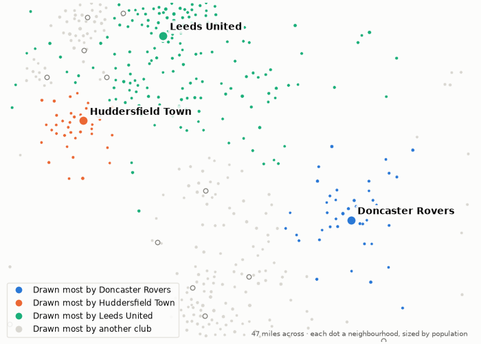
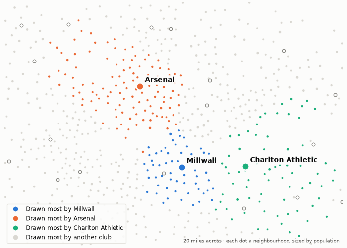
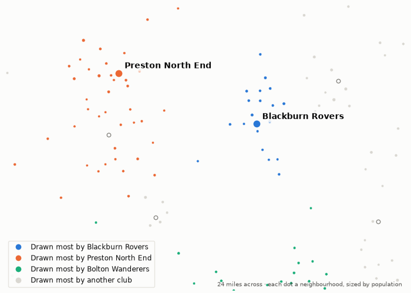

Whose people this week's clubs are playing for. 25 November 2026.
320,000 people live nearer to Doncaster Rovers's ground than to any other. Doncaster Rovers draw 50% of them; Huddersfield Town draw 1%. The next biggest draws are Leeds United (7%), Sheffield United (5%) and Hull City (4%).
217,000 people live nearer to Huddersfield Town's ground than to any other. Huddersfield Town draw 53% of them; Doncaster Rovers draw 0%. The next biggest draws are Leeds United (10%), Manchester City (6%) and Manchester United (4%).
They meet on Thursday. On the map, each neighbourhood takes the colour of the club that draws most of it.

The model gives Millwall 812,000 people to draw on, the 23rd largest market of the 112 clubs in the top five divisions. They sit 33rd in the pyramid: 16th in the Championship.
On their own doorstep, 307,000 people, they draw 49%. The next biggest draws are Arsenal (9%), Charlton Athletic (8%) and West Ham United (7%).
They play Stoke away on Wednesday.

The model gives Blackburn Rovers 208,000 people to draw on, the 67th largest market of the 112 clubs in the top five divisions. They sit 32nd in the pyramid: 13th in the Championship.
On their own doorstep, 171,000 people, they draw 61%. The next biggest draws are Preston North End (7%), Bolton Wanderers (5%) and Burnley (4%).
They play Watford away on Wednesday.

Modelled, not counted. A club's doorstep is the neighbourhoods nearer its ground than any other; every neighbourhood's people are split across all clubs by distance and division, as the divisions stand today. How catchment is measured.
Built from the English football database, tiers 1–5 from 1958/59. Results from football-data.co.uk. Archived copy.